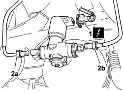
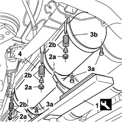

1042A70 Left CANISTER for CNG CANISTER ASSEMBLY - R.R.
- Path
- Procedures > 10 ENGINE > 1042 (METHANE) CNG CANISTER AND PIPES > 1042A methane gas cannister and tubes for re-charging > 1042A70 Left CANISTER for CNG CANISTER ASSEMBLY - R.R.
- Kind
- repair procedure (removal / refitting; the operation number is the code)
- Applies to
- all engines; all production periods; only with equipment: BIPOWER
- Interactive page
- https://sloeber94.github.io/elrnDB-fDbl/en/#/2584529
Applies to: all engines; all production periods; only with equipment: Cargo trim level and BIPOWER
 Removing
Removing
 Refitting
RefittingPlace the vehicle on a lift.
Drain the high pressure circuit as described in the specific operation 1042A02 C.N.G. - FUEL SYSTEM Safety check .
1042E60 CNG CANISTER ASSEMBLY SHIELD/PROTECTION / - R.R.
1. Disconnect the electrical connection of the methane cut-off solenoid on the left side cylinder.
 | Name | Connector |
|---|---|---|
1 | Methane supply solenoid | L60 |
2. On the solenoid of the left side cylinder, disconnect the connector of the recharging pipe (2a) and the connector of the pipe (2b) connecting to the three-way connector.

Applies to: all engines; all production periods; only with equipment: Cargo trim level and BIPOWER
Place the cylinder support tool on a hydraulic column lift prepared for supporting the weight of the cylinder.
 | Name | Country |
|---|---|---|
- | Support for CNG canisters | 1.870.732.000 |
Place the brackets of the cylinder support tool on the innermost holes on the base of the tool so as to ensure the best possible grip on the cylinder.
1. Position the tool for supporting the cylinder underneath the left side cylinder during the removal operation.
| Name | Country |
|---|---|---|
1 | Support for CNG canisters | 1.870.732.000 |
2. Undo the fixing nuts (2a), recover the bushes and springs (2b) for securing on the outer part of the cylinder retaining collars.
3. Undo the bolts (3a) on the inside and withdraw the cylinder support collars (3b).
4. Lower the hydraulic lift and remove the left side cylinder.
With the assistance of a second operator, remove the cylinder from the equipment and rest it on suitable supports.

Applies to: all engines; all production periods; only with equipment: Cargo trim level and BIPOWER
Applies to: all engines; all production periods; only with equipment: Cargo trim level and BIPOWER
Refitting
RemovingWith the assistance of a second operator, position the cylinder on the support tool.
| Name | Country |
|---|---|---|
- | Support for CNG canisters | 1.870.732.000 |
Lift the tool and position the cylinder in the specific housing under the bodywork.
Position the locking collars and insert the bolts on the inside, and springs, bushes and nuts on the outside.
Tighten to torque the bolts located on the inside securing the cylinder support collars.
 | Fastening | Component | Ø | Value (daNm) |
|---|---|---|---|---|
- | Bolt | CYLINDER FASTENING ELEMENTS | M10 x 1.25 | (to internal bodyshell side) 4.5 |
Tighten to torque the nuts located on the outside securing the cylinder support collars.
| Fastening | Component | Ø | Value (daNm) |
|---|---|---|---|---|
- | Nut | CYLINDER FASTENING ELEMENTS | M10 x 1.25 | (to outside of bodyshell) 1.5 |
Remove the cylinder support tool.
On the solenoid of the left side cylinder, connect the connector of the pipe connecting to the three-way connector.
| Fastening | Component | Ø | Value (daNm) |
|---|---|---|---|---|
- | Connector | RECHARGING SOLENOID VALVE CONNECTING. PIPE. | - | (on solenoid valve) 2.5 |
On the solenoid of the left side cylinder, connect the connector of the recharging pipe.
| Fastening | Component | Ø | Value (daNm) |
|---|---|---|---|---|
- | Connector | CNG REPRESSURIZING PIPE CONNECTORS | - | (on solenoid valve) 2.5 |
Connect the electrical connection of the methane cut-off solenoid on the left side cylinder.
| Name | Connector |
|---|---|---|
- | Methane supply solenoid | L60 |
Manually set the CNG cut-off solenoids to the open position and check that the system is working.
Connecct the Examiner diagnostic instrument in the 'Active Diagnosis' environment, and select and run 'Gas solenoids relay' to allow the solenoids to open and to restore the CNG system operating pressure; read the pressure value given by the sensor (located on the pressure reduction unit in the engine compartment) which should be greater than or equal to 11 bar, otherwise it will not be possible to switch from petrol to methane.
1042E60 CNG CANISTER ASSEMBLY SHIELD/PROTECTION / - R.R.
Remove the vehicle from the lift.
1042A06 C.N.G. - FUEL SYSTEM check for any leaks using electronic detector following operations .
Topics linked from this page (4)
- 1042A02 C.N.G. - FUEL SYSTEM Safety check
- 1042A06 C.N.G. - FUEL SYSTEM check for any leaks using electronic detector following operations
- 1042A20 injection system solenoid on cylinder r r
- 1042E60 CNG CANISTER ASSEMBLY SHIELD/PROTECTION / - R.R.